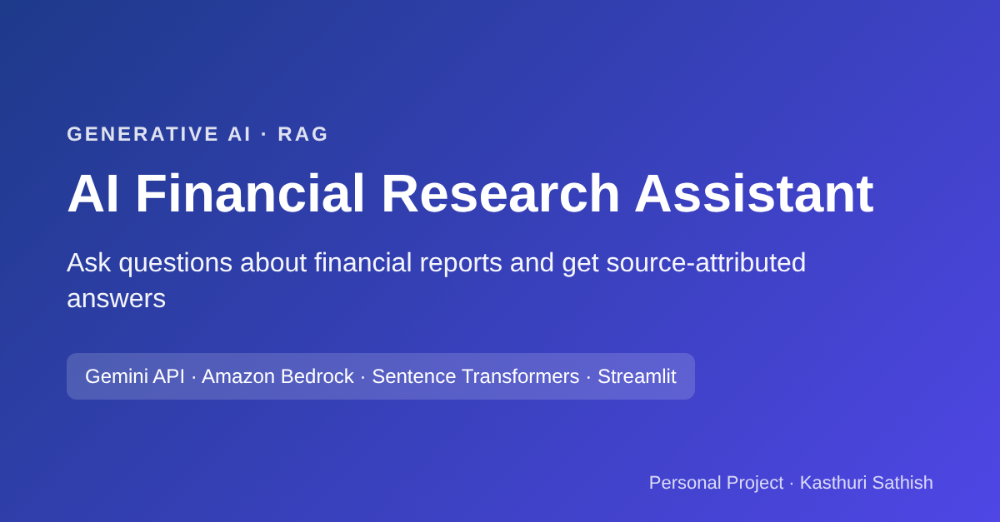

01Generative AI · RAG
AI Financial Research Assistant
A RAG assistant that answers questions from financial reports, with a source for every answer.
The problemAnalysts lose time skimming long reports, and generic chatbots can invent figures without sources.
Key decisionsAnswer only from retrieved documents, say when information isn't available, and show the source with every answer.
What I learnedTested with 25 curated questions. Gemini Flash was faster; Claude on Bedrock handled dense financial tables better.
25Test questions
2Models compared
3Guardrail rules
